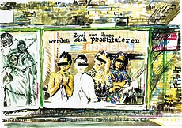

|
MALEREI HEUTE (PAINTING NOW)
Stefan Hayn & Anja-Christin Remmert
D 2006 | 61 Min.
Format: 35 mm | colour and b&w
Original language : German
Script: Stefan Hayn
Camera: Bernadette Paassen
Editing: Anja-Christin Remmert, Stefan Hayn
Sound: Klaus Barm, Katja Neppert
Music: Klaus Barm
Production: Stefan Hayn
In summer of 1998 Stefan Hayn started painting water-color paintings of billboards put up in the urban landscape of Berlin. From the outset, each sheet was a“take“ of a documentary film, which records the economical, political and interpersonal changes that become obvious on the „public“ images from 1998 to 2005. The long-term documentary starts at a point in time when changes in the working and living conditions in reunified Germany become obvious and – through the change of Government from Kohl to Schröder – politically relevant, and it assumes liability for a visuel dicussion of the term „work“.
Stefan Hayn, born in 1965 in Rothenburg ob der Tauber, lives and works in Berlin. He studied arts at the Arts Academy of Berlin at the Rebecca Horn’s Class and film directing at the documentary class at the Film Academy Baden-Württemberg. Since 1989 he works as a film maker and does paintings and drawings.
Anja-Christin Remmert, born in 1970 in Königs-Wusterhausen/Berlin. At the Film Academy Baden-Württemberg she studied film directing at the documentary classes of Thomas Schadt and Helga Reidemeister.
Films by Hayn (selection): Schwulenfilm 1989 | Tuntenfilm 1990 | Pissen 1990 | Klassenkampf in Amerika 1993 | Ein Film über den Arbeiter 1998 | Thirteen Rules or The Difficulty of Sexpressing Oneself 1998
Films by Remmert: Zwischenzeit 1995 | Gesta 1999 | Im Leben bleiben 1998
Together (selection): Schuldnerberichte 2002 | Painting Now 2005
back
|